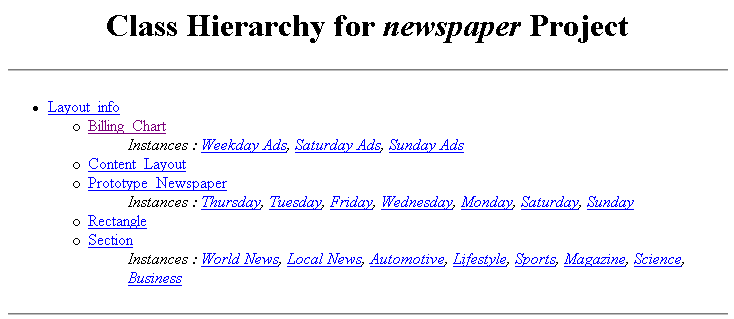

Generating HTML
From a Project
Generating HTML
From a Project

You can generate an HTML of a project. This allows you to view the class
hierarchy and, optionally, all the instances. The output consists of an index
page, which gives the class hierarchy for the project, including links to
individual pages for each the class. Class pages include slot descriptions and
optional instances. If instances are selected, they have individual pages, and
appear in the index hierarchy and under each class.
You can generate HTML pages for the entire project, or restrict the output to
a subset of the project.
To generate HTML for the entire project:
- Select Generate HTML... from the Project menu.
The Generate HTML Options dialog box is displayed.
- If you want to save the project in a different location from the default,
type the new location in the Output Directory line or click the
 button to navigate to the desired location.
button to navigate to the desired location.
- If you want a page for each instance, make sure Include Instances
is selected.
- Click OK.
The HTML pages are generated in the selected directory.
To restrict the output to a subset of the project:
- Select Generate HTML... from the Project menu.
The Generate HTML Options dialog box is displayed.
- Choose the location where you want the project to be saved.
- If you want a page for each instance, make sure Include Instances
is selected.
- To restrict the classes that will appear, first remove the :THING class
from the Root Classes list by highlighting it and clicking the Remove
 button. Removing the :THING class allows you to restrict the classes you
want.
button. Removing the :THING class allows you to restrict the classes you
want.
- To choose a class as a root class, click the Add
button at the right of the Root Classes list.
A Select Classes dialog box is displayed.
- Highlight one or more classes you want as root classes. Selecting a class
as a root class means that it and all its subordinate classes will be
displayed in the HTML hierarchy. You can select multiple classes by holding
down the Ctrl key.
- Click OK.
- The classes you selected are added to the Root Classes list. You
can select additional classes by repeating steps 5 though 8.
- When you have the classes you want as root classes, click OK.
The HTML pages are generated in the selected directory.
The following shows examples of the index and class page output for the newspaper
project, with Layout_info selected as the root class.
Page for the index:
:
Page for the billing chart class:
Next: Cascading Open
Windows
Project Table of Contents